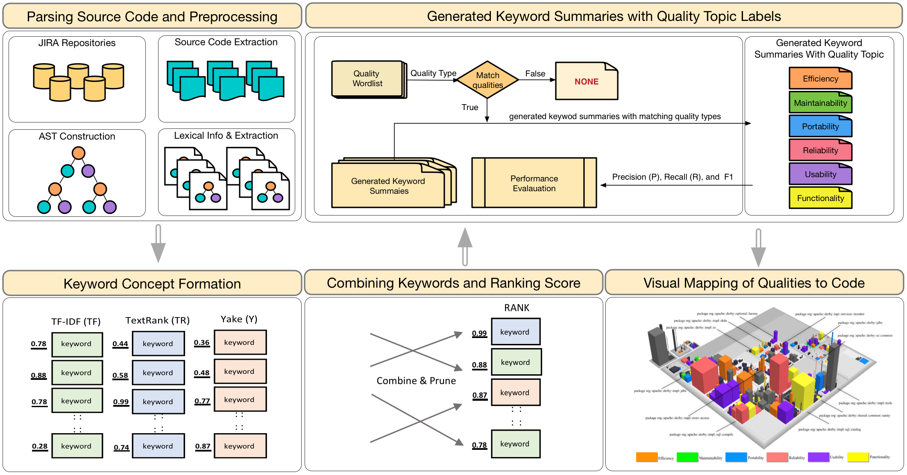

Towards Semantically Enhanced Detection of Quality Concerns in Source Code
Project Description. Quality concerns defined by ISO/IEC 9126 that focus on the quality aspect of the product such as efficiency, usability, and security, among other, tend to be neglected until they are retrofitted later at the implementation level. This retrofitted strategy poses a major challenge and hinders developers from efficiently detecting and understanding quality concerns because they are frequently implemented with no particular structure and are bound to low cohesion (qualities scattered across the codebase). To address these problems, we propose an alternative approach for detecting scattered quality-related content in the codebase. We introduce SoftQualDetector, a lightweight framework that combines three unsupervised techniques for extracting a rich-set of logical text units from the code from the context of semantics, importance, and textual features to detect quality-related classes and generate short keyword summaries pertaining to quality-related classes. SoftQualDetector also provides a 3D visualization for monitoring automated detected quality-related concerns across the codebase so that developers can easily locate the emerging quality concerns and the associated classes. Our evaluation of 1,248 annotated Java classes shows that SoftQualDetector outperforms several state-of-the-art methods.
